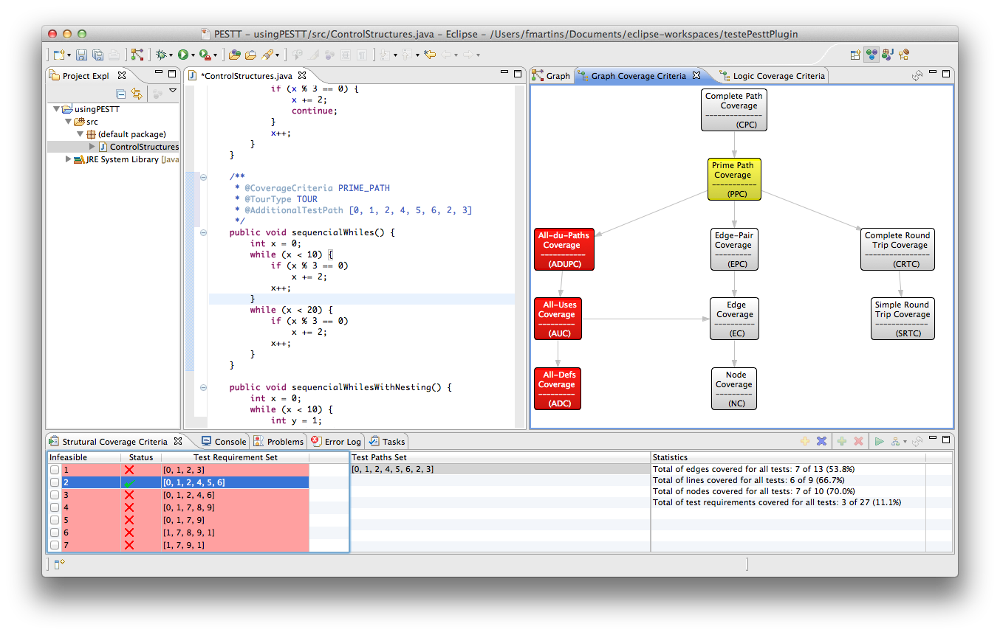

Welcome to the PESTT project page
PESTT is an Eclipse plug-in for learning and designing unit tests for the Java language. Currently, PESTT supports unit tests based on the control flow graph (CFG) of methods. It generates the CFG based on the source code of the method, allows for bidirectional linking between the source code and the generated CFG, generates test requirements, allows for the specification of test paths, computes the coverage level statistics, and much more.
The following screen shot gives a flavor of PESTT in action.
The PESTT perspective shows the CFG of method sequencialWhiles on the right view (Graph),
and on the bottom, the Structural Coverage Criteria view shows the test requirement set (left), the test path
set (in the middle), and the coverage level (right).
You can pick from several graph coverage criteria, as illustrated by the following screen shot
PESTT Documentation
For installing PESTT please follow our instructions. Then, it is advisable to take a quick tutorial on how to use PESTT.
More information is available in the project wiki.
Authors and Contributors
PESST is being developed by
If you want to contribute to the project, drop us an e-mail (see contacts below).Support or Contact
You can contact us through the e-mail pestt 'at' di.fc.ul.pt.
In case you find some undocumented features ;) we appreciate you inform us either through the project e-mail or submitting an issue at GitHub project site (a GitHub account is required).